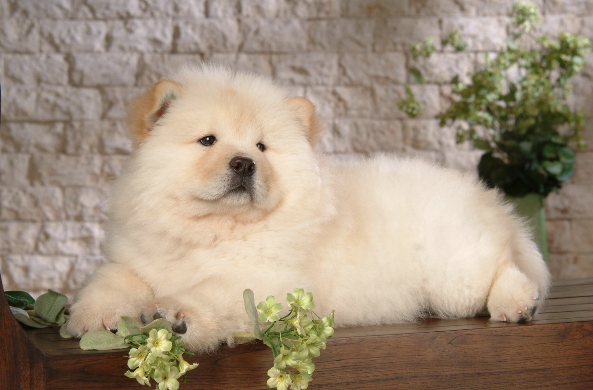

The Chow Chow is a dog breed originally from northern China. The Chow Chow is a sturdily built dog, square in profile, with a broad skull and small, triangular, erect ears with rounded tips. The breed is known for a very dense double coat that is either smooth or rough.The fur is particularly thick in the neck area, giving it a distinctive ruff or mane appearance. The coat may be shaded/self-red, black, blue, cinnamon/fawn, or cream.

The Chow Chow has been identified as a basal breed that predates the emergence of the modern breeds in the 19th Century. One writer proposed that the Chow Chow originated in China 2,000 years ago or possibly originated in Arctic Asia 3,000 years ago and then migrated to Mongolia, Siberia, then to China.One Chinese legend mentions large war dogs from Central Asia that resembled black-tongued lions. One Chinese ruler was said to own 5,000 Chows. The Chinese also used Chows to pull dog sleds, and this was remarked upon by Marco Polo.